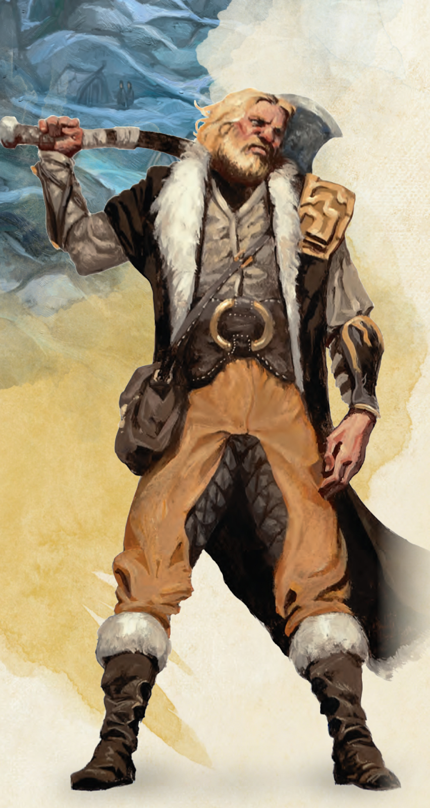

According to Wizards of the Coast, "Barbarians come alive in the chaos of combat. They can enter a berserk state where rage takes over, giving them superhuman strength and resilience. A barbarian can draw on this reservoir of fury only a few times without resting, but those few rages are usually sufficient to defeat whatever threats arise."
Basically, in layman's terms, the barbarian is a tanky dps dealer. A barbarian can rage to reduce the damage they take and increase the damage they do, and depending on the subclass, can even deal aoe (area of effect, something that does wide-scale damage, usually requiring saving throws) damage.
RAGE! Barbarians have access to the unique rage feature!
